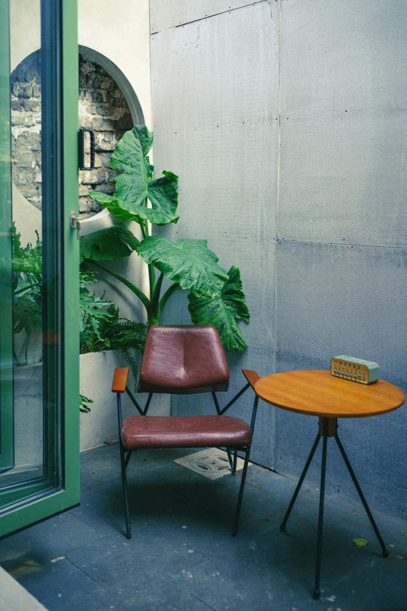
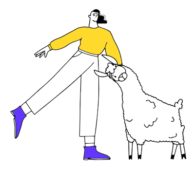

Materiales de clase · Class materials
Elige tu idioma abajo. Cada unidad tiene su propia página.·Choose your language below. Each unit has its own page.


Sobre mí · About
Diana Mateus
Profesora de idiomas e intérprete. Tengo una maestría en Educación Bilingüe y he enseñado español e inglés a estudiantes de más de veinte países — desde adultos profesionales hasta programas IGCSE, PYP, MYP e IBDP. También trabajo como intérprete simultánea y traductora para organizaciones enfocadas en salud y justicia social.
Language teacher and interpreter. I hold a Master's in Bilingual Education and have taught Spanish and English to students from over twenty countries — from working professionals to IGCSE, PYP, MYP and IBDP programmes. I also work as a simultaneous interpreter and translator for organisations working in health and social justice.
Recursos de clase · Class resources